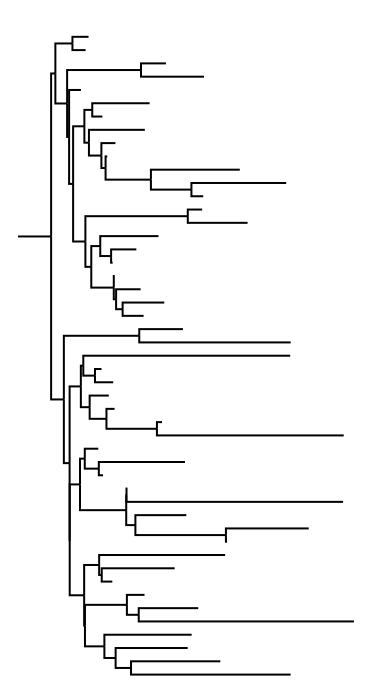
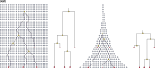
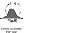
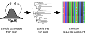
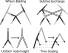
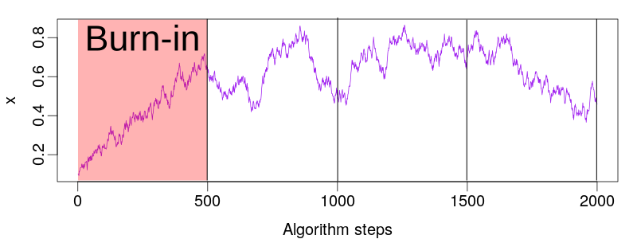
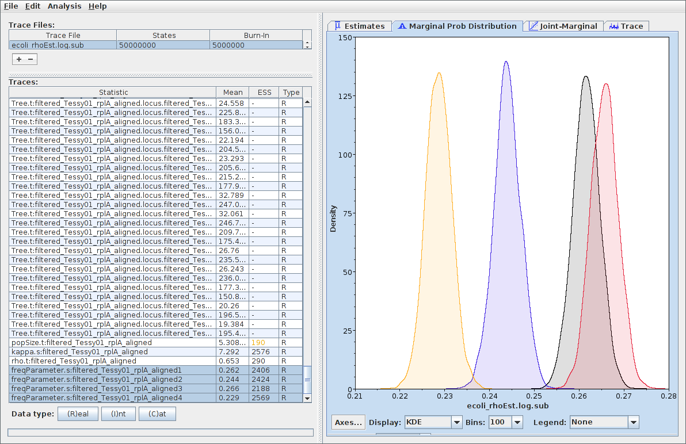
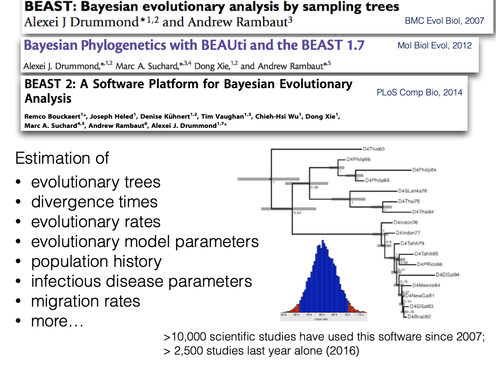

Later lectures fill in the biology of the tree priors: the coalescent (L10), the multispecies coalescent (L11) and birth-death models (L12).
Suppose some dark night a policeman walks down a street. He hears a burglar alarm, looks across the street, and sees a jewelry store with a broken window. Then a gentleman wearing a mask comes crawling out of the window, carrying a bag full of jewelry. The policeman decides immediately that the gentleman is a thief. How does he decide this?E. T. Jaynes, Probability Theory: The Logic of Science
Deductive logic only licenses conclusions of this form:
if $A$ is true, then $B$ is true
$A$ is true
$B$ is true
The policeman has no such certainty. What he actually uses is:
if $A$ is true, then $B$ is likely
$B$ is true
$A$ is likely
This is exactly the situation of a biologist with an alignment and a question about ancestry.
$P(A \mid B)$ is how strongly we should believe $A$, given that we know $B$. It is a measure of the state of our knowledge, not a property of the world.
One equation connects what we believed before the data to what we should believe after:
$$\color{cyan}{P(H \mid D)} = \frac{\color{orange}{P(D \mid H)}\;\color{#ff9c9c}{P(H)}}{\color{lime}{P(D)}}$$
posterior $\;\propto\;$ likelihood $\times$ prior
You want the frequency of an allele in a population. You have some prior expectation, and you genotype $n$ individuals, of which $k$ carry the allele.
With little data the prior dominates. With plenty of data the likelihood dominates and the choice of prior stops mattering.
Always report your priors, and always check whether they matter.
The data are an alignment. Essentially everything else is unknown:

We want a posterior distribution over all of it at once.
$$\Pr(D \mid T, \mu)$$
Applying Bayes' theorem, and using the fact that $\theta$ affects the alignment only through the tree:
$$\underbrace{P(T,\mu,\theta \mid D)}_{\text{posterior}} \;\propto\; \underbrace{\Pr(D \mid T,\mu)}_{\text{likelihood}}\; \underbrace{P(T \mid \theta)}_{\text{tree prior}}\; \underbrace{P(\mu,\theta)}_{\text{parameter priors}}$$
Gene trees within a population. Links the shape of a tree to population size and how it changed through time.
Gene trees embedded inside a species tree. Explains why different genes give different trees.
The species tree itself, generated by speciation and extinction.

Splitting the model into "a process that makes the tree" and "a process that evolves sequences down the tree" implies that the sequences did not influence the shape of the tree:


Standard phylogenetic models therefore assume the sequenced sites are evolving neutrally.
The number of possible rooted trees grows faster than almost anything else in biology:
| Species | Rooted trees |
|---|---|
| 4 | 15 |
| 10 | 34,459,425 |
| 20 | $8.2 \times 10^{21}$ |
| 50 | $2.8 \times 10^{76}$ |
For 50 species there are more possible trees than there are atoms in the Earth, by a factor of about $10^{26}$. Enumeration is not an option, now or ever.
And each tree carries continuous unknowns (branch lengths, rates) on top of that.
$$\alpha = \min\left[1,\; \frac{\text{score of proposed}}{\text{score of current}}\right]$$
That is the only equation you need for this lecture.
Markov chain (each step depends only on the last) Monte Carlo (the steps are random).
Take five apes. There are 15 possible unrooted trees. A short alignment of 40 sites gives each one a score, and MCMC will walk among them.
With more than five species we need a set of rearrangements that can, in principle, reach every tree, and that also change branch lengths and node times.

A real analysis mixes many proposal types, some changing topology and some changing times or rates. Designing efficient proposals is a substantial part of what phylogenetics software does.
The chain has to start somewhere, and that starting point is not a draw from the posterior:

There is no test that proves convergence. There are only tests that can reveal failure.
A chain that has not converged can look perfectly calm.
Each logged parameter is a sample from its own posterior distribution. Plot them, and summarise with a median and a 95% credible interval.

A summary tree is a summary, not the result. Branches with low posterior probability are drawn just as solidly as branches with high posterior probability, so always read the support values.
A posterior probability of 0.93 on a branch means: given this alignment, this evolutionary model and these priors, there is a 93 percent chance that this grouping is real.

Also useful: